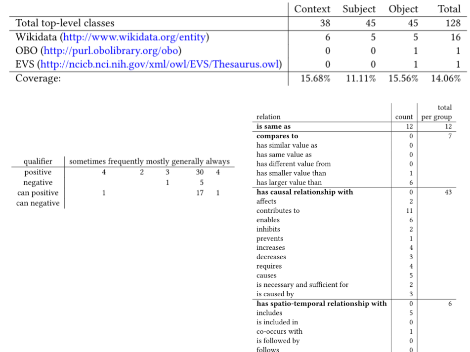

Expressing High-Level Scientific Claims with Formal Semantics
Cristina-Iulia Bucur1 , Tobias Kuhn2 , Davide Ceolin 3 Jacco van Ossenbruggen4 1, 2, 4 Vrije Universiteit Amsterdam, 3 Centrum Wiskunde & Informatica (CWI)
WAI September 2021
These slides: http://bit.do/WAI-Sept-2020
Scientific communication: accessible to human readers
- Long texts in natural language in formats like PDF
- Digitized, but not machine-interpretable
- Semantic technologies: mostly to annotate and describe on a metalevel scientific knowledge
Scientific knowledge: making it accessible for automated systems
- Full semantic representation of natural language: still too complex
- Mature semantic technologies: RDF, OWL and other formalisms based on formal logic
- Extract simple RDF structures from content: needs manual curation
- Represent scientific findings in formal logic: challenging for experts
- no general scheme or procedure!
Express the content of scientific claims in formal logic
- The "super-pattern": a general template of a logical statement that can be instantiated to represent scientific claims in formal logic

How can we represent high-level claims?

Semantics of instantiated super-pattern
 where:
where:
- c, s, o = ....

Super-pattern interpretation

Research questions
- To what extent can our super-pattern be used to formalize the main claims of scientific articles from different disciplines?
- How reliably can the super-pattern be applied to formalize existing claims by knowledge representation experts?
Formalize main claims from different disciplines
- Dataset A (50 claims):
- select articles: random from Semantic Scholar, in English, published 2000+, research article with abstract
- identify main claim: choose most high-level one, rephrase to an AIDA sentence
- apply super-pattern: identify main classes, relation and qualifier from SP ontology
- find identifiers in existing ontologies: Wikidata, BioOntology and LOV
- Dataset B (25 claims): used for evaluation
(extend this)

Vocabulary usage and descriptive analysis
Reliability of super-pattern: formalization study
- Knowledge representation experts independently apply the super-pattern
- Stage 1: intro session, about the super-pattern, examples of formalizations from Dataset A, apply super-pattern on Dataset B (25 claims).
- Stage 2: independently inspect and review all formalizations from Stage 1 (100 formalizations), vote on the best formalization for a claim and for formalizations that had mistakes.
- Stage 3: discussion among participants of the choices in Stage 2 with the possibility to update decisions.
Results formalization study: levels of agreement

Formalization study: agreement "convergence"

Conclusions
- The super-pattern can be used to formalize the main claims of scientific articles from different disciplines (RQ1)
- The super-pattern can be applied in a reliable manner to formalize existing claims by knowledge representation experts (RQ2)
Discussion
- Semantic technologies like RDF: a framework to represent the content of scientific claims with formal semantics is possible
- The super-pattern: a cross-disciplinary approach that works
- Solved: formally expressing the meaning of claims, even if most of the classes used are not top-level ones
- Interesting to see how regular users would perform
- Super-pattern in practice: Formalization Papers
- The extent to which reasoning can be applied
- Possible applications: (partial) reasoning, answering questions, finding contradicting claims, etc.